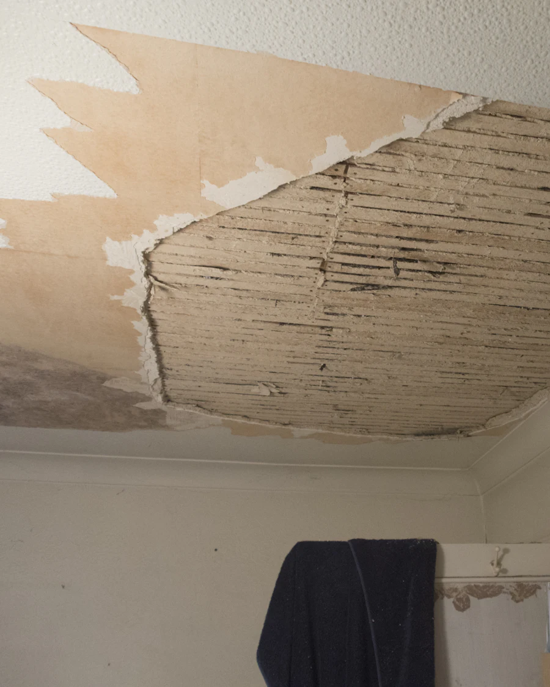
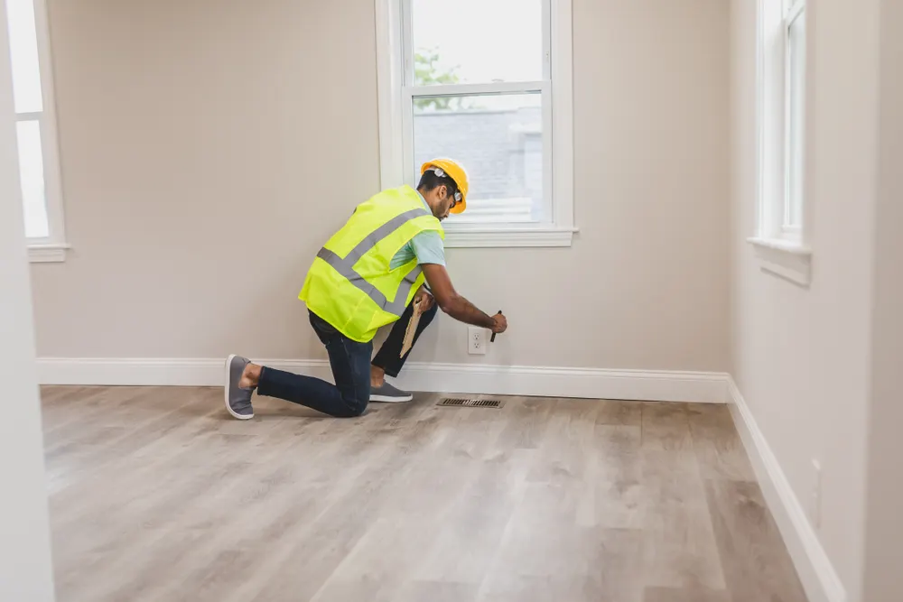
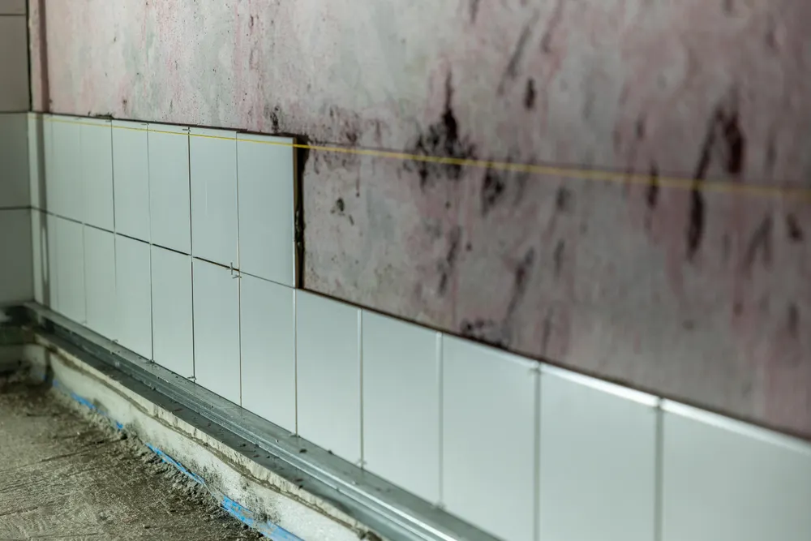
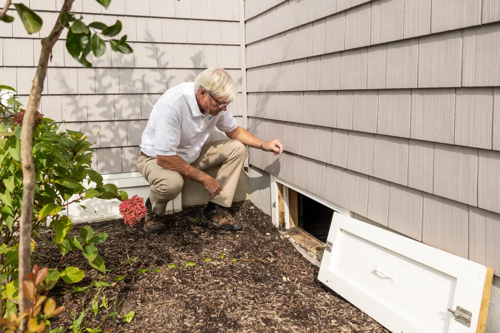
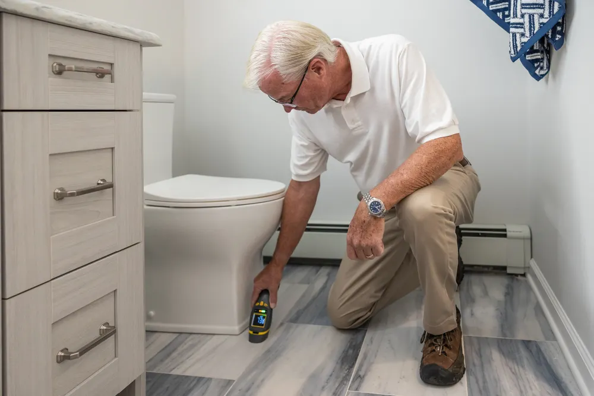
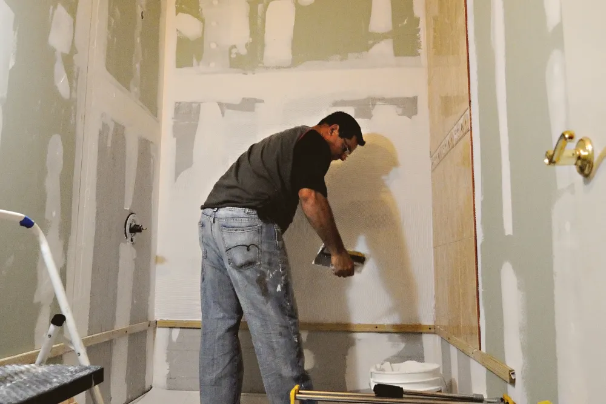
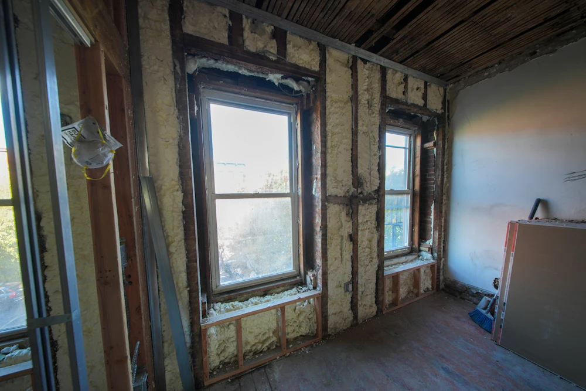

DOLDA FEL I HUS – juridisk hjälp
Har du upptäckt dolda fel i ditt hus eller villa? Vi hjälper dig.
DOLDA FEL I HUS
Det börjar ofta med något litet, en unken lukt i källaren, en spricka som inte fanns i besiktningsprotokollet eller ett badrumsgolv som känns mjukt under foten. För många köpare blir frågan om dolda fel vid husköp en akut ekonomisk och juridisk situation. När skadan visar sig efter tillträdet uppstår snabbt osäkerhet, är detta något du själv måste bära, eller kan säljaren hållas ansvarig?
Vid fastighetsköp är utgångspunkten att huset säljs i det skick det befinner sig i. Samtidigt innebär det inte att säljaren går fri från allt ansvar. Svensk rätt ger köparen ett visst skydd mot fel som inte kunde upptäckas vid en noggrann undersökning och som inte heller var förväntade med hänsyn till husets ålder, skick och pris. Just där uppstår många tvister.
Exempel på DOLDA FEL i hus
Exempel på dolda fel som ibland kan klassificeras som dolda defekter är följande.
En rättslig bedömning måste dock göras i varje enskilt fall för att avgöra om de är kvalificerade.
Fuktskador
Detta inkluderar skador inom kärnbyggnadsstrukturen som ofta kräver teknisk analys för att identifiera.
Read moreMögel i väggar eller grund
Dessa problem som ofta finns bakom fasta installationer eller i fundament kan få betydande ekonomiska konsekvenser.
Read moreDräneringsproblem
Frågor med hur vatten leds bort från fastigheten som inte kunde upptäckas vid en noggrann inspektion.
Read moreKonstruktionsfel
Felaktiga installationer eller felaktigt applicerad tätskikt som inte är synliga för blotta ögat vid köptillfället.
Read moreEl- eller VVS-fel
Allvarliga brister i den ursprungliga byggprocessen som avviker från förväntade standarder med hänsyn till fastighetens ålder och skick
Read moreStructural moisture damage
Varius quisque odio mauris lectus consequat sed. Pretium purus feugiat volut
Read more
Vad är dolda fel vid husköp?
Ett dolt fel är inte bara ett fel som köparen inte kände till. För att ett fel ska anses vara dolt i juridisk mening krävs normalt att flera förutsättningar är uppfyllda.
Felet ska ha funnits i fastigheten redan vid köpet, även om det inte märktes då. Det ska inte ha varit upptäckbart vid en noggrant och ordentligt utförd undersökning.
Det ska heller inte vara något som köparen rimligen borde ha räknat med utifrån fastighetens ålder, konstruktion, pris eller allmänna skick.
Det här är en viktig gränsdragning. Ett äldre hus får ofta tåla en högre grad av slitage, tekniska brister och renoveringsbehov än ett nyare hus. Om du köper en fastighet från 1950-talet kan du inte utgå från samma standard som i ett nybyggt hus.Därför avgörs frågan om dolda fel alltid i sitt sammanhang.
Ett vanligt missförstånd är att alla fel som upptäcks efter tillträdet automatiskt är säljarens ansvar. Så är det inte. Många fel faller i stället inom köparens undersökningsplikt eller betraktas som normala med hänsyn till husets egenskaper. Ta gärna kontakt med oss ifall du har upptäckt dolda fel i hus.
Har du juridiska frågor om dolda fel i hus?
Fråga våra experter!

Köparens undersökningsplikt väger tungt vid dolda fel i hus
Vid dolda fel i hus är undersökningsplikten central. Köparen har ett väldigt långtgående ansvar att själv undersöka fastigheten före köpet.
Det räcker sällan att gå igenom huset översiktligt. Om det finns tecken på problem, till exempel missfärgningar, lukt, sättningar, fuktspår eller tidigare bristfälliga renoveringar skärps köparens plikten att utreda vidare.
Det betyder att ett fel som kunde ha upptäckts genom en fördjupad kontroll ofta inte betraktas som dolt.
Har det funnits varningssignaler som borde ha lett till fortsatt undersökning kan köparen få svårt att rikta ett framgångsrikt krav mot säljaren.

En överlåtelsebesiktning är därför ofta mycket viktig, men den ersätter inte alltid köparens ansvar fullt ut. Besiktningsprotokoll innehåller dessutom ofta risknoteringar och rekommendationer om fortsatt teknisk utredning.
Om sådana rekommendationer inte följs kan det påverka möjligheten att senare hävda dolt fel.
När ett fel inte är dolt
Ett fel anses normalt inte vara dolt om det var synligt, om det framgick av besiktningsprotokoll eller annan dokumentation, eller om det varit en rimlig risk i just den typen av fastighet. Detsamma gäller om köparen fått tydlig information om bristen före köpet.
Det gäller också att skilja mellan faktisk skada och juridiskt felansvar. Att taket behöver bytas inom några år är inte nödvändigtvis ett dolt fel. Att taket redan vid köpet hade allvarliga konstruktionsbrister som inte gick att upptäcka kan däremot vara något annat.

Säljarens ansvar
Säljaren ansvarar inte för alla problem som visar sig efter köpet, men ansvar kan uppkomma om fastigheten avviker från vad köparen med fog kunnat förutsätta. Det gäller särskilt om säljaren lämnat konkreta uppgifter som visar sig vara felaktiga eller underlåtit att informera om ett känt förhållande av betydelse.
Om säljaren exempelvis uttryckligen uppgett att ett badrum är fackmässigt renoverat, men det senare visar sig finnas allvarliga tätskiktsfel, kan det få stor betydelse. Detsamma gäller om säljaren känt till återkommande fuktproblem men inte berättat det. I sådana situationer handlar tvisten inte bara om ett tekniskt fel, utan också om vilket informationsansvar som funnits vid köpet.
Samtidigt krävs bevisning. Att en skada upptäcks senare är inte tillräckligt i sig. Det måste ofta visas att problemet faktiskt hade sin grund i förhållanden som förelåg redan när köpeavtalet ingicks.
Vilken ersättning kan köparen få?
Om ett dolt fel konstateras kan köparen ha rätt till
Prisavdrag
kan göras och ska motsvara mellanskillnaden mellan en felfri fastighet och fastighetens pris om felet varit känt vid köptillfället.
Skadestånd
kan köparen ha rätt till för det fall kostnader uppstår med anledning av felet. Exempelvis kan det handla om tillfälligt boende om detta krävs.
Hävning
av köpet kan i vissa fall vara berättigade men kräver då mycket omfattande fel som är mycket svåra att avhjälpa.
Vanliga exempel på tvister om dolda fel vid husköp
I praktiken rör tvister ofta fuktskador, brister i dränering, felaktigt utförda våtrum, mögel, skador i tak eller konstruktion samt el- och VVS-installationer som inte utförts korrekt. Även frågor om avloppssystem, grundläggning och ventilation kan leda till omfattande anspråk.
Det som gör dessa tvister juridiskt komplicerade är att samma typ av skada kan bedömas olika beroende på omständigheterna. En fuktskada i källare kan i ett hus av viss ålder vara en förutsebar risk. I ett annat fall kan samma skada bero på en dold och allvarlig avvikelse som säljaren ansvarar för. Därför går det sällan att dra säkra slutsatser enbart utifrån vilken skada som upptäckts.

Tiden spelar stor roll
Den som vill göra gällande dolt fel måste agera utan onödigt dröjsmål. När ett fel upptäcks bör säljaren reklameras så snart som möjligt. En sen reklamation kan försämra läget avsevärt, även om felet i sig skulle kunna omfattas av säljaransvar.
Det är också viktigt att säkra bevisning tidigt. Om skadan repareras innan den dokumenterats ordentligt kan det bli betydligt svårare att visa både omfattning, orsak och tidpunkt för felets uppkomst.

Så bör du agera om du misstänker dolda fel i hus
Det första steget är att dokumentera det du upptäckt. Fotografera, spara besiktningsprotokoll, köpehandlingar,objektsbeskrivning, mäklaruppgifter och all kommunikation med säljaren. Om möjligt bör en sakkunnig bedöma skadan och uttala sig om orsak, ålder och om felet sannolikt fanns vid köpet.
Därefter bör en reklamation skickas till säljaren. Den bör vara tydlig och skriftlig. Det räcker inte alltid att bara meddela att ett problem finns. Du behöver normalt ange vilket fel som görs gällande och att du avser att rikta krav med anledning av detta.
Många gör misstaget att börja innan underlaget är ordentligt genomarbetat. Det kan fungera i enklare situationer, men i mer kostsamma tvister är det ofta bättre att tidigt få en juridisk bedömning av ansvaret, bevisläget och storleken på ett möjligt krav. Våra jurister och advokater hjälper dig gärna om du har upptäckt dolda fel i hus.
Ersättning vid dolda fel i hus
Om ett dolt fel kan styrkas kan köparen i vissa fall ha rätt till prisavdrag. I mer ovanliga situationer kan även skadestånd bli aktuellt, beroende på omständigheterna och grunden för anspråket. Hur ersättningen beräknas är inte alltid självklart. Den utgår inte automatiskt från hela reparationskostnaden, utan bedömningen påverkas bland annat av fastighetens värde, standard och den konkreta avvikelsen.
Här uppstår ofta en skillnad mellan teknisk och juridisk logik. Att en reparation kostar mycket betyder inte alltid att hela beloppet kan krävas av säljaren. Samtidigt kan ett till synes begränsat fel få stor rättslig betydelse om det påverkar fastighetens marknadsvärde eller innebär att köparen fått något annat än vad som med fog kunnat förutsättas.


Varför juridisk hjälp ofta gör skillnad vid dolda fel i hus
Tvister om dolda fel är sällan enkla. De kräver normalt en kombination av juridisk analys, teknisk utredning och strategisk bevisning. Frågor om undersökningsplikt, säljarens uppgifter, husets förväntade skick och reklamationstid måste vägas samman. Ett enskilt besiktningsutlåtande eller ett mejl från säljaren kan få större betydelse än många köpare först inser.
För den som står med oväntade kostnader och ett oklart ansvarsläge är det därför ofta klokt att låta en erfaren advokat/jurist bedöma ärendet tidigt. Det ökar möjligheten att rikta rätt krav, mot rätt part, på rätt grund. För den som söker specialiserad hjälp inom just denna typ av tvister är det också en fördel att vända sig till en aktör som arbetar fokuserat med frågan, såsom Advantage Advokatbyrå (www.advantage.se, www.advokatdoldafel.se).
När ett husköp utvecklas till en tvist handlar det sällan bara om byggfel. Det handlar om bevisning, ansvar och ekonomiskt skydd. Ju tidigare du får klarhet i din rättsliga position, desto bättre står du rustad att fatta beslut som håller även när motparten säger emot.
Kontakta oss
Ta gärna kontakta med oss ifall du skulle behöva vår hjälp om du har upptäckt dolda fel i hus, vi nås på info@advantage.se eller 08 20 21 40.
Vanliga frågor om tvist vid dolda fel
Ett dolt fel i hus är ett fel som fanns i fastigheten redan vid köpet men som inte gick att upptäcka trots en noggrann undersökning av huset. Felet ska heller inte vara något som köparen rimligen borde ha förväntat sig med hänsyn till husets ålder, skick och pris. Bedömningen görs alltid utifrån omständigheterna i det enskilda fallet och reglerna i jordabalken.
Vanliga dolda fel i hus är fuktskador, mögel, felaktiga våtrum, brister i dränering, takläckage, sättningsskador och felaktiga elinstallationer. Även skador i krypgrund eller källare är vanligt förekommande i tvister om dolda fel efter husköp.
Om ett dolt fel upptäcks efter husköpet kan köparen i vissa fall ha rätt till prisavdrag, skadestånd eller ersättning för reparationskostnader. Vid mycket allvarliga fel kan det även bli aktuellt att häva köpet. Bedömningen påverkas bland annat av fastighetens skick, köparens undersökningsplikt och vilken information säljaren lämnat inför köpet.
Det finns inget lagkrav på att genomföra en besiktning, men köparen har en omfattande undersökningsplikt. Utan besiktning blir det ofta betydligt svårare att visa att felet verkligen varit dolt och inte borde ha upptäckts före köpet.
Undersökningsplikten innebär att köparen måste undersöka huset noggrant före köpet. Om det finns tecken på problem, exempelvis lukt, fukt, missfärgningar eller sprickor, förväntas köparen gå vidare med en mer fördjupad undersökning eller anlita sakkunnig expert.
Om felet juridiskt klassas som ett dolt fel kan säljaren i vissa fall bli skyldig att ersätta köparen för skadan. I många situationer hanteras kravet genom säljarens dolda fel-försäkring eller genom förhandling mellan parterna.
Ja, det går att använda friskrivningsklausuler i köpekontraktet för att begränsa säljarens ansvar. En friskrivning måste dock vara tydligt formulerad och gäller inte alltid fullt ut. Bedömningen påverkas av omständigheterna i det enskilda fallet.
För att styrka att ett fel är dolt behöver köparen vanligtvis kunna visa att felet fanns vid köpet, att det inte gick att upptäcka och att det inte heller var förväntat med hänsyn till fastighetens skick. Köparen behöver också visa att felet påverkar fastighetens värde eller användning. Ofta krävs utlåtanden från besiktningsman eller annan sakkunnig expert.
Om du upptäcker ett misstänkt dolt fel bör du dokumentera skadan noggrant och kontakta säljaren skriftligen så snart som möjligt. Det är även viktigt att ta in expertutlåtande och kontrollera vilka försäkringar som finns. Vid tvist eller osäkerhet kring ansvar kan det vara klokt att kontakta jurist för juridisk rådgivning.
Ja, om felet bedöms som ett dolt fel kan köparen i vissa fall få ersättning motsvarande kostnaden för att åtgärda felet eller ersättning för värdeminskning av fastigheten.
Ja, reglerna om dolda fel gäller även äldre hus. Bedömningen påverkas dock av husets ålder och skick eftersom äldre fastigheter normalt förväntas ha fler brister och större risk för slitage än nyare hus.
Ja, Advantage Advokatbyrå har erfarenhet av att företräda både köpare och säljare i tvister om dolda fel i hus och fastigheter. Våra jurister arbetar löpande med frågor inom fastighetsrätt, fel i fastighet, undersökningsplikt och krav mot säljare eller försäkringsbolag. Vi hjälper klienter genom hela processen – från juridisk bedömning och reklamation till förhandling och tvist i domstol. Målet är alltid att ge tydlig rådgivning och driva ärendet effektivt för att tillvarata klientens rättigheter.

Kontakta oss för rådgivning i ditt ärende.
Vi bistår klienter i hela Sverige med juridisk rådgivning för att hjälpa till att bedöma om ett fel juridiskt sett kvalificerar som ett dolt fel och vilka rättigheter och ersättningsmöjligheter som finns. Vårt mål är alltid att hjälpa våra klienter att nå en effektiv och juridiskt hållbar lösning.